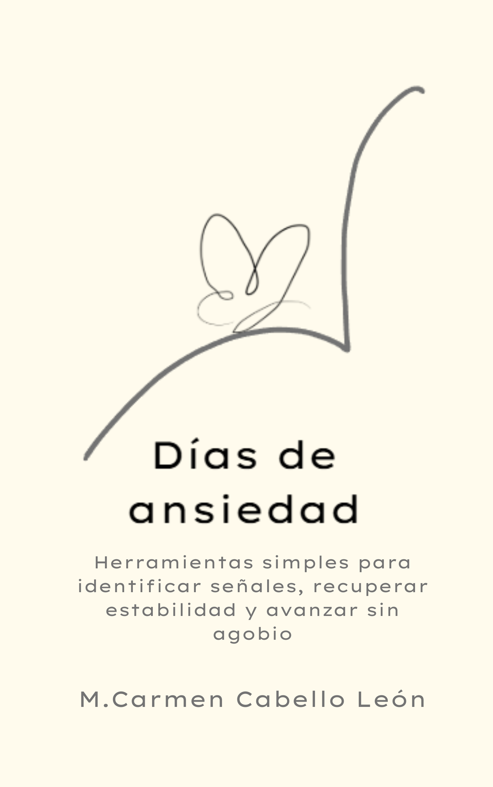
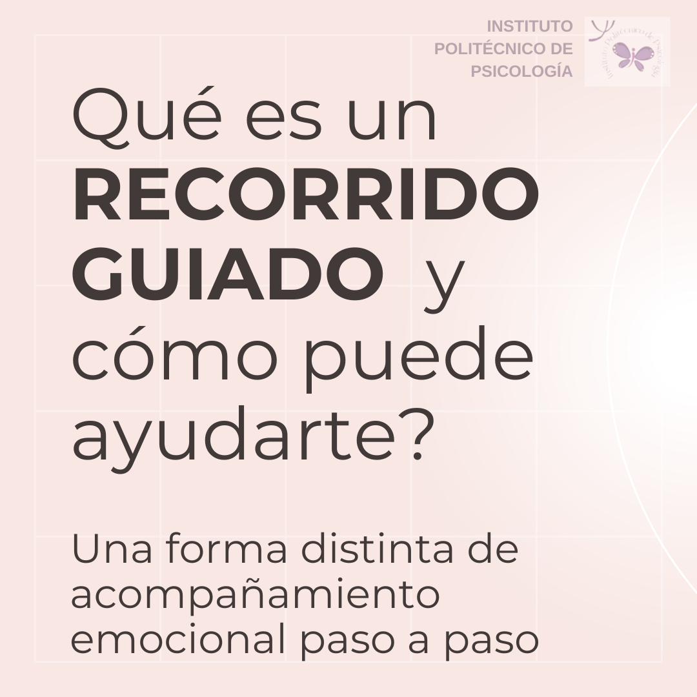
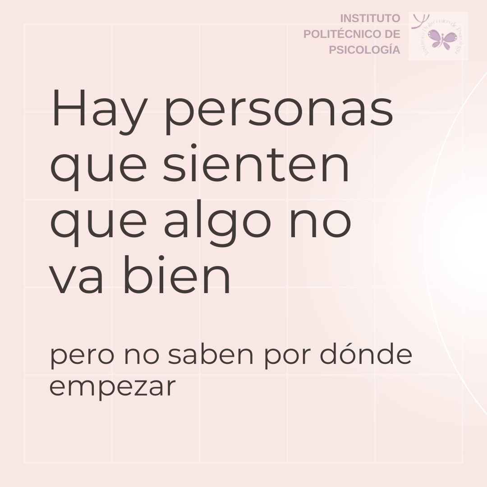
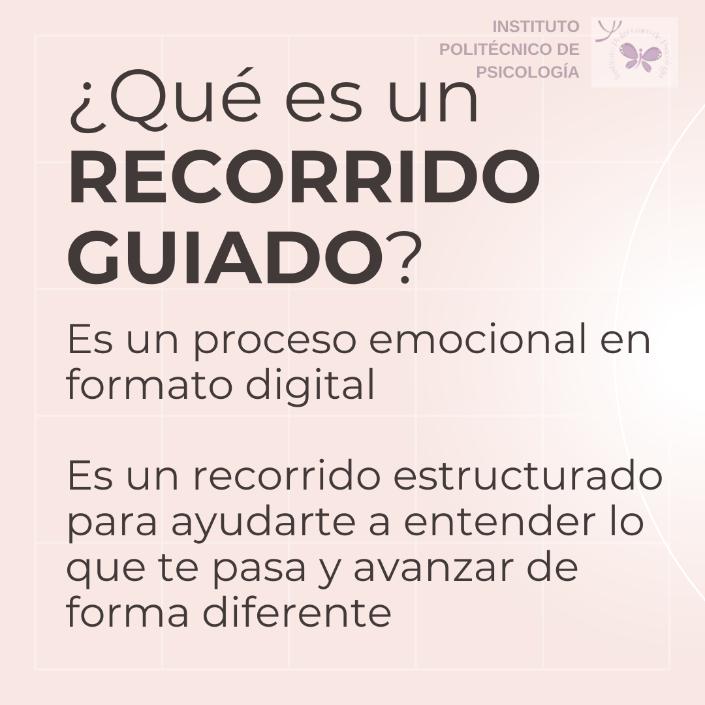
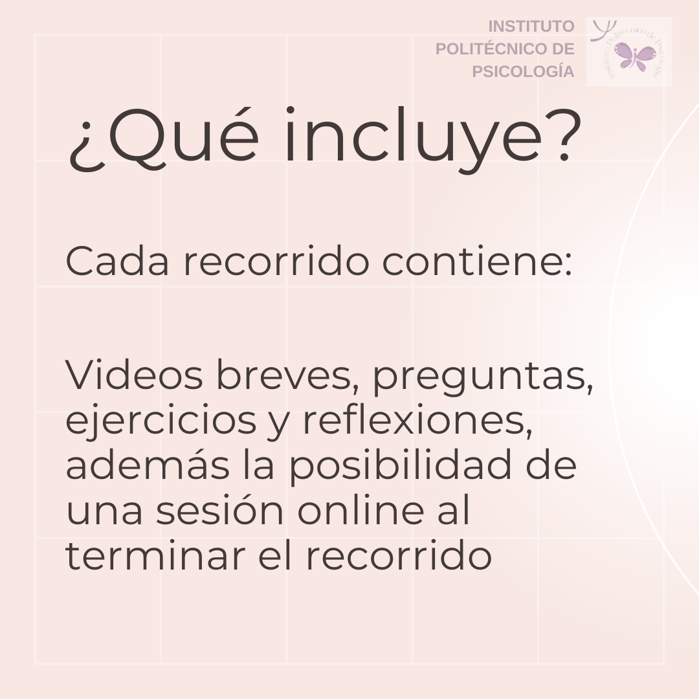

Terapia online para adultos
Sesiones online adaptadas a tu ritmo. Un acompañamiento profesional y confidencial desde donde estés en España.
Psicóloga Online | Terapia Adultos
Soy Mari Carmen Cabello León, psicóloga general sanitaria en el Instituto Politécnico de Psicología. Acompaño en terapia online a adultos en España con un enfoque cercano, serio y humano.
Mis servicios se centran en terapia online para adultos con problemas de ansiedad, miedos, agorafobia, estrés, insomnio y baja autoestima. Trabajo para que cada persona se sienta segura, escuchada y empoderada.
Sesiones online adaptadas a tu ritmo. Un acompañamiento profesional y confidencial desde donde estés en España.
Intervenciones prácticas para ganar control, reducir bloqueo emocional y superar agorafobia o pánico.
Herramientas para gestionar la sobrecarga, mejorar el descanso y recuperar el equilibrio mental.
Trabajo en confianza, seguridad emocional y relaciones más saludables desde la terapia online.
Mi marca personal combina formación clínica, neuropsicología y una experiencia sólida en terapia para adultos. Esto permite que Google asocie mi nombre con psicóloga online, terapia online, ansiedad y autoestima.
Trabajo con personas que quieren avanzar sin desplazamientos, en un entorno seguro y flexible. Mis sesiones son simples de reservar y enfocadas en resultados reales.
Conóceme mejor
Libro en Amazon: Descubre el libro
Recorridos guiados que acompañan tu proceso emocional paso a paso, con actividades y acompañamiento para avanzar con seguridad.




¿Deseas una consulta online o quieres pedir información antes de reservar? Puedes escribirme por WhatsApp o por correo, o visitar mis redes sociales.

Santiago Ramón y Cajal denominó a un tipo especial de neuronas:
Las mariposas del alma
“células de formas delicadas y elegantes, las misteriosas mariposas del alma, cuyo batir de alas quién sabe si esclarecerá algún día el secreto de la vida mental”.
Ramón y Cajal, S. (1917). Recuerdos de mi vida. Editorial: Nivola.